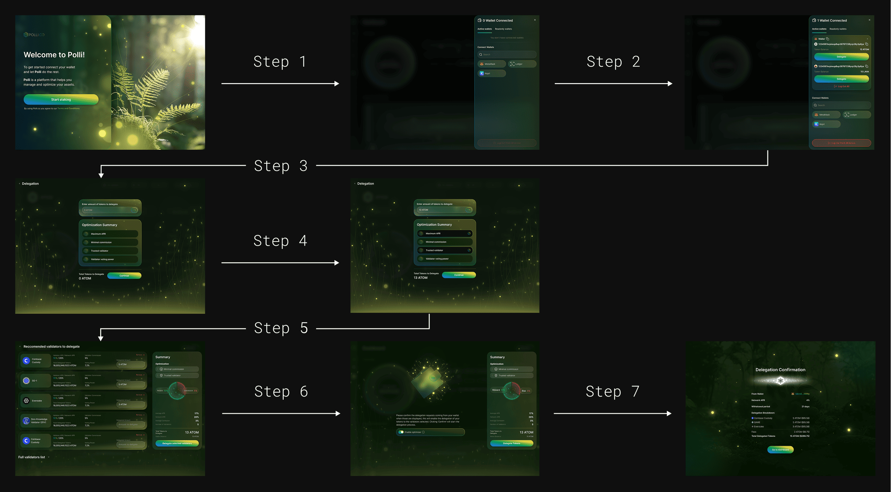
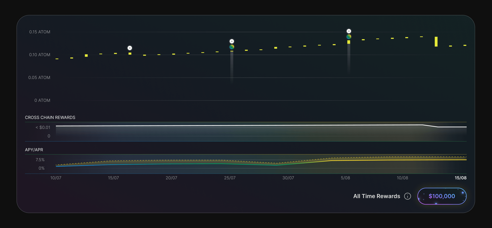
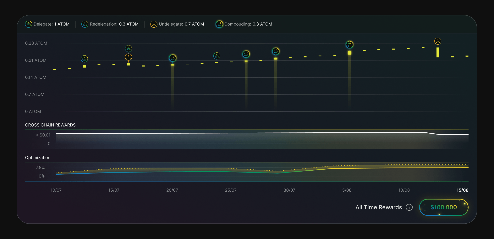
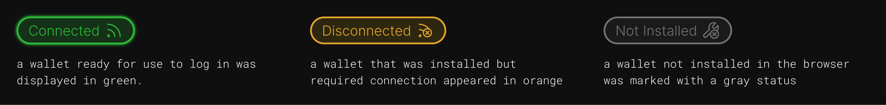

Polli.co
Designing clarity and control into AI-powered Web3 delegation.
As the sole product designer, I designed Polli from early concepts to handoff — turning complex delegation, AI recommendations, and wallet states into an experience users could understand and control.

Challenge
How might we reduce the complexity of delegation without taking control away from experienced users — especially when AI is making recommendations on their behalf?
My role
Sole Product Designer | ~2 years | End-to-end ownership
-
 Full design cycle from moodboard to final UI over ~2 years as the sole designer
Full design cycle from moodboard to final UI over ~2 years as the sole designer
-
Design system built from scratch enabled the web app and website to run in parallel without losing consistency
-
I worked closely and continuously with the development team to gain a deeper understanding of the project's workings.
-
For a time, I supervised a second designer who assisted with marketing materials.
User
The target audience is technically literate users aged 22–50 who understand the crypto market well but want to spend less time on operational decisions. Transparency, control, and speed are what they care about.
Some UX decisions
Reduced delegation from 7 steps to 3
Problem
The original delegation flow required users to go through seven separate steps before reaching their goal. Wallet connection, configuration, optimization settings, and validator selection all required separate actions, creating unnecessary friction and cognitive load.

Design decision
I reduced the flow by removing unnecessary decision points rather than simply cutting screens. Wallet connection became a contextual action, related inputs and recommendations were brought together, and Polli began automatically suggesting the optimal strategy and validator set - while keeping those recommendations editable.
-
The result: 7 → 3 steps, with fewer decisions required from the user while keeping control available when needed.

Designing one withdrawal flow for two scenarios
Problem
Withdrawals had to support both single and multiple validator selection, but each scenario required different behavior. With one validator selected, users could specify the withdrawal amount; with multiple validators, the amount had to be calculated automatically from their combined balance.
Design decision
Instead of asking users to choose a withdrawal type upfront or creating two separate flows, I designed one adaptive modal. The amount field appears when a single validator is selected and disappears when multiple validators are selected, while the total updates automatically.
-
The result: two technically different withdrawal scenarios work within one consistent flow, with the interface introducing complexity only when it is needed.


Making automated actions visible
Problem
Polli performs optimization actions in the background, but the original rewards chart focused primarily on performance. Users could see how their rewards changed over time without a clear connection to what Polli was doing along the way.

Design decision
I brought delegation, redelegation, undelegation, and compounding events directly into the rewards timeline and connected them with the same actions in the activity history. I also redesigned the action icons into a network-agnostic system that could remain consistent across different networks and themes.
-
The result: The chart now connects performance with Polli’s activity, helping users understand not only what changed, but what happened along the way.

Making wallet states easy to recognize
Problem
With multiple supported wallets, users needed to quickly distinguish between three states: connected, installed but disconnected, and not installed. These states also required different next actions.
Design decision
I created distinct visual treatments for each state, using color and status cues to communicate both the wallet’s current condition and the action available to the user — continue with the connected wallet, connect an existing one, or install a missing extension.
-
The result: users can scan the available wallets, understand their state at a glance, and immediately see what they need to do next.

Process
The project went through a full design cycle — from market research and moodboard to final UI and testing. Three phases, each with its own focus.

Brand & Identity
The logo needed to work in a Web3 context — legible at small sizes, feeling technical, but standing out from competitors. Several directions explored, one final mark chosen.
Wireframes & Testing
The core challenge was explaining a complex financial process through a simple interface. I did not conduct the research directly. There was a tester on the team, and I also received data from the marketing team, which I used to make changes to the project. The key insight from testing: users didn't just want to see the outcome — they wanted to understand what the AI was doing and why. This reshaped the entire dashboard structure.

Wireframes
Concept Exploration
Three visual directions were explored in parallel to test different levels of density and tone before committing to a single design language for the product.


Web Application
The heart of the product — a dashboard where users see the AI at work: what delegation decisions were made, on what basis, and how the portfolio changed. Transparency became the core UI principle.


Design System
Built from scratch — colour tokens, type scale, components with all states, and developer documentation. This allowed the web app and website to be worked on in parallel without falling out of sync.


Where the project landed
The product reached final UI stage and was handed off to development. In 2026 the project was paused due to the crypto market downturn — a decision unrelated to the quality of the design or the product.
Impact
-
Developing a smooth and intuitive delegation workflow
-
Designed the complete product experience from concept to handoff.
-
Creating a large-scale design system with flexible components that could be quickly modified and applied to network styles.
-
Created production-ready UI for the development team.
-
Developing a comprehensive app style that is eco-friendly and user-friendly.
-
Improved transparency around AI-generated recommendations through explanation patterns.